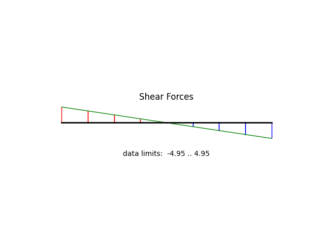
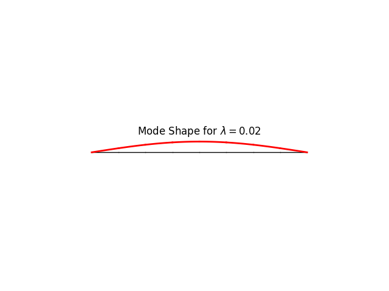

Note
Go to the end to download the full example code
Buckling of a beam with pin-pin support
modeled using a 2D frame element
x============x=============x <---
^ o
x ..... node
=== ... frame element
<-- ... applied force
^ ..... pin support
o ..... roller support
degrees of freedom:
0 ... horizontal displacement, u
1 ... vertical displacement, v
2 ... rotation, theta
N = 2 |
number of elements |
L = 100.0 |
column length |
EA = 2000000.0 |
axial stiffness |
EI = 21000.0 |
flexural stiffness |
w = 0.1 |
applied lateral load |
Author: Peter Mackenzie-Helnwein
from femedu.examples.Example import *
from femedu.domain import *
from femedu.solver.NewtonRaphsonSolver import *
from femedu.elements.finite.Frame2D import *
from femedu.materials.ElasticSection import *
class ExampleFrame01(Example):
def problem(self):
#
# ==== Initialization ====
#
# ========== setting mesh parameters ==============
N = 8 # number of elements in the mesh
L = 100.0 # column free length
# ========== setting material parameters ==============
params = dict(
E = 20000., # Young's modulus
A = 100.0, # cross section area
I = 10.0 # cross section moment of inertia
)
# ========== setting load parameters ==============
w = -0.1 # uniform lateral load on the column
Pcr = np.pi**2 * params['E'] * params['I'] / L**2 # Euler buckling load
# ========== setting analysis parameters ==============
target_load_level = 0.99 # 99% of Euler load
max_steps = 10 # solve max_steps points on the primary path
w *= 0.01
Pcr *= 0.01
target_load_level = 99. # 99% of Euler load
# define a list of target load levels
load_levels = np.linspace(0, target_load_level, max_steps)
#
# ==== Build the system model ====
#
model = System()
model.setSolver(NewtonRaphsonSolver())
# create nodes
nd0 = Node(0.0, 0.0)
model += nd0
ndi = nd0
for i in range(N):
# nodes
ndj = Node( (i+1)*L/N, 0.0 )
model += ndj
# elements
elem = Frame2D(ndi, ndj, ElasticSection(params))
model += elem
# ** apply the element portion of the reference load
elem.setDistLoad(w)
ndi = ndj # jump to next element: make current end-node the next start-node
# define support(s)
nd0.fixDOF('ux', 'uy') # horizontal support left end
ndi.fixDOF('uy') # vertical support right end
# ==== complete the reference load ====
# these are only nodal forces as part of the reference load
# .. load only the upper node
ndi.setLoad((-Pcr,), ('ux',))
# show model information
print(model)
#
# ==== perform the analysis ===
#
print("\n==== perform the analysis ===\n")
# * apply the load in multiple smaller load steps
# set up data recorder
model.initRecorder()
model.trackStability(True)
# initialize the analysis:
model.resetDisplacements() # set U to all zeros
model.setLoadFactor(0.0) # define a known equilibrium solution
model.startRecorder()
detKt = []
lambdas = []
# solve for all load_levels
for loadfactor in load_levels:
# define node X2 as the controled node; downward direction is prescribed:
model.setLoadFactor(loadfactor)
model.solve(verbose=True)
# stability check
lambdas.append(model.loadfactor)
detKt.append(model.solver.checkStability())
# report results
print('+')
#model.report()
print("\n=== next load level ===\n")
#
# ==== create some nice plots ===
#
model.report()
model.plot(factor=1.0, filename="frame1_deformed.png")
fig, ax = plt.subplots()
ax.plot(lambdas,detKt,'--*r')
ax.grid(True)
ax.set_xlabel('Load factor, $ \lambda $')
ax.set_ylabel("Stability index, $ {det}\: {\\bf K}_t $")
fig.savefig("frame1_stability.png")
fig.show()
model.beamValuePlot("F", filename="frame1_force.png")
model.beamValuePlot("V", filename="frame1_shear.png")
model.beamValuePlot("M", filename="frame1_moment.png")
model.plotBucklingMode(factor=10., filename="frame1_buckling_mode0.png")
Run the example by creating an instance of the problem and executing it by calling Example.run()
if __name__ == "__main__":
ex = ExampleFrame01()
ex.run()
- 
- 
System object
Node_177(x=[0. 0.], u=None)
Node_178(x=[12.5 0. ], u=None)
Node_179(x=[25. 0.], u=None)
Node_180(x=[37.5 0. ], u=None)
Node_181(x=[50. 0.], u=None)
Node_182(x=[62.5 0. ], u=None)
Node_183(x=[75. 0.], u=None)
Node_184(x=[87.5 0. ], u=None)
Node_185(x=[100. 0.], u=None)
Frame2D(Node_177, Node_178, ElasticSection(Material)({'E': 20000.0, 'A': 100.0, 'I': 10.0, 'nu': 0.0, 'fy': 1e+30}))
Frame2D(Node_178, Node_179, ElasticSection(Material)({'E': 20000.0, 'A': 100.0, 'I': 10.0, 'nu': 0.0, 'fy': 1e+30}))
Frame2D(Node_179, Node_180, ElasticSection(Material)({'E': 20000.0, 'A': 100.0, 'I': 10.0, 'nu': 0.0, 'fy': 1e+30}))
Frame2D(Node_180, Node_181, ElasticSection(Material)({'E': 20000.0, 'A': 100.0, 'I': 10.0, 'nu': 0.0, 'fy': 1e+30}))
Frame2D(Node_181, Node_182, ElasticSection(Material)({'E': 20000.0, 'A': 100.0, 'I': 10.0, 'nu': 0.0, 'fy': 1e+30}))
Frame2D(Node_182, Node_183, ElasticSection(Material)({'E': 20000.0, 'A': 100.0, 'I': 10.0, 'nu': 0.0, 'fy': 1e+30}))
Frame2D(Node_183, Node_184, ElasticSection(Material)({'E': 20000.0, 'A': 100.0, 'I': 10.0, 'nu': 0.0, 'fy': 1e+30}))
Frame2D(Node_184, Node_185, ElasticSection(Material)({'E': 20000.0, 'A': 100.0, 'I': 10.0, 'nu': 0.0, 'fy': 1e+30}))
==== perform the analysis ===
norm of the out-of-balance force: 0.0000e+00
** Stability check: (smallest 1 eigenvalues of Kt)
mode 0: 2.43
+
** Stability check: (smallest eigenvalue of Kt) = 2.432144038297571
+
=== next load level ===
norm of the out-of-balance force: 2.1717e+01
norm of the out-of-balance force: 3.9834e-02
norm of the out-of-balance force: 3.5463e-11
** Stability check: (smallest 1 eigenvalues of Kt)
mode 0: 2.16
+
** Stability check: (smallest eigenvalue of Kt) = 2.1646162526563075
+
=== next load level ===
norm of the out-of-balance force: 2.1717e+01
norm of the out-of-balance force: 8.9520e-02
norm of the out-of-balance force: 2.5309e-11
** Stability check: (smallest 1 eigenvalues of Kt)
mode 0: 1.90
+
** Stability check: (smallest eigenvalue of Kt) = 1.897086480938334
+
=== next load level ===
norm of the out-of-balance force: 2.1717e+01
norm of the out-of-balance force: 1.5323e-01
norm of the out-of-balance force: 2.8686e-11
** Stability check: (smallest 1 eigenvalues of Kt)
mode 0: 1.63
+
** Stability check: (smallest eigenvalue of Kt) = 1.6295547207298116
+
=== next load level ===
norm of the out-of-balance force: 2.1717e+01
norm of the out-of-balance force: 2.3787e-01
norm of the out-of-balance force: 4.7776e-11
** Stability check: (smallest 1 eigenvalues of Kt)
mode 0: 1.36
+
** Stability check: (smallest eigenvalue of Kt) = 1.3620209694583907
+
=== next load level ===
norm of the out-of-balance force: 2.1717e+01
norm of the out-of-balance force: 3.5578e-01
norm of the out-of-balance force: 4.9634e-11
** Stability check: (smallest 1 eigenvalues of Kt)
mode 0: 1.09
+
** Stability check: (smallest eigenvalue of Kt) = 1.0944852246263654
+
=== next load level ===
norm of the out-of-balance force: 2.1717e+01
norm of the out-of-balance force: 5.3137e-01
norm of the out-of-balance force: 2.1510e-11
** Stability check: (smallest 1 eigenvalues of Kt)
mode 0: 0.83
+
** Stability check: (smallest eigenvalue of Kt) = 0.826947483518603
+
=== next load level ===
norm of the out-of-balance force: 2.1717e+01
norm of the out-of-balance force: 8.2064e-01
norm of the out-of-balance force: 2.2279e-12
** Stability check: (smallest 1 eigenvalues of Kt)
mode 0: 0.56
+
** Stability check: (smallest eigenvalue of Kt) = 0.5594077438868548
+
=== next load level ===
norm of the out-of-balance force: 2.1717e+01
norm of the out-of-balance force: 1.3867e+00
norm of the out-of-balance force: 2.7505e-11
** Stability check: (smallest 1 eigenvalues of Kt)
mode 0: 0.29
+
** Stability check: (smallest eigenvalue of Kt) = 0.2918660028917888
+
=== next load level ===
norm of the out-of-balance force: 2.1717e+01
norm of the out-of-balance force: 2.9907e+00
norm of the out-of-balance force: 6.8549e-09
** Stability check: (smallest 1 eigenvalues of Kt)
mode 0: 0.02
+
** Stability check: (smallest eigenvalue of Kt) = 0.024322257944867483
+
=== next load level ===
System Analysis Report
=======================
Nodes:
---------------------
Node_177:
x: [0. 0.]
fix: ['ux', 'uy']
u: [ 0. 0. -2.03292855]
Node_178:
x: [12.5 0. ]
u: [-1.22136354e-03 -2.47624315e+01 -1.87795981e+00]
Node_179:
x: [25. 0.]
u: [-2.44272709e-03 -4.57514676e+01 -1.43704758e+00]
Node_180:
x: [37.5 0. ]
u: [-3.66409063e-03 -5.97734339e+01 -7.77608633e-01]
Node_181:
x: [50. 0.]
u: [-4.88545418e-03 -6.46967903e+01 -5.03187629e-13]
Node_182:
x: [62.5 0. ]
u: [-6.10681772e-03 -5.97734339e+01 7.77608633e-01]
Node_183:
x: [75. 0.]
u: [-7.32818127e-03 -4.57514676e+01 1.43704758e+00]
Node_184:
x: [87.5 0. ]
u: [-8.54954481e-03 -2.47624315e+01 1.87795981e+00]
Node_185:
x: [100. 0.]
fix: ['uy']
P: [-1.97392088 0. 0. ]
u: [-0.00977091 0. 2.03292855]
Elements:
---------------------
Frame2D_290: nodes ( Node_177 Node_178 )
material: ElasticSection
internal forces: f0=-195.42 V0=4.33 M0=1.29 fl=-195.42 Vl=4.33 Ml=4894.46 Pw=-0.62 Mw=-1.29
Frame2D_291: nodes ( Node_178 Node_179 )
material: ElasticSection
internal forces: f0=-195.42 V0=3.09 M0=4894.46 fl=-195.42 Vl=3.09 Ml=9034.77 Pw=-0.62 Mw=-1.29
Frame2D_292: nodes ( Node_179 Node_180 )
material: ElasticSection
internal forces: f0=-195.42 V0=1.86 M0=9034.77 fl=-195.42 Vl=1.86 Ml=11798.12 Pw=-0.62 Mw=-1.29
Frame2D_293: nodes ( Node_180 Node_181 )
material: ElasticSection
internal forces: f0=-195.42 V0=0.62 M0=11798.12 fl=-195.42 Vl=0.62 Ml=12767.97 Pw=-0.62 Mw=-1.29
Frame2D_294: nodes ( Node_181 Node_182 )
material: ElasticSection
internal forces: f0=-195.42 V0=-0.62 M0=12767.97 fl=-195.42 Vl=-0.62 Ml=11798.12 Pw=-0.62 Mw=-1.29
Frame2D_295: nodes ( Node_182 Node_183 )
material: ElasticSection
internal forces: f0=-195.42 V0=-1.86 M0=11798.12 fl=-195.42 Vl=-1.86 Ml=9034.77 Pw=-0.62 Mw=-1.29
Frame2D_296: nodes ( Node_183 Node_184 )
material: ElasticSection
internal forces: f0=-195.42 V0=-3.09 M0=9034.77 fl=-195.42 Vl=-3.09 Ml=4894.46 Pw=-0.62 Mw=-1.29
Frame2D_297: nodes ( Node_184 Node_185 )
material: ElasticSection
internal forces: f0=-195.42 V0=-4.33 M0=4894.46 fl=-195.42 Vl=-4.33 Ml=1.29 Pw=-0.62 Mw=-1.29
Total running time of the script: (0 minutes 0.897 seconds)